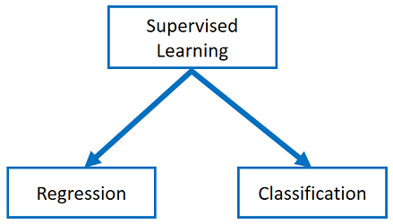
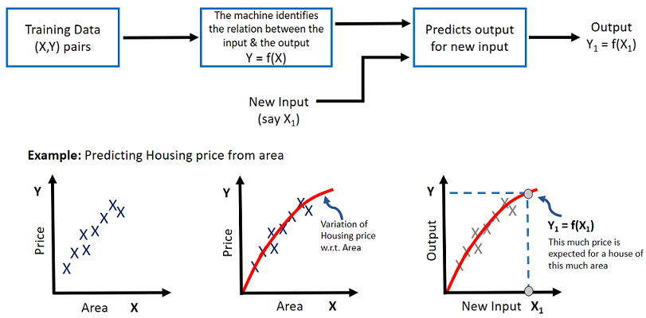
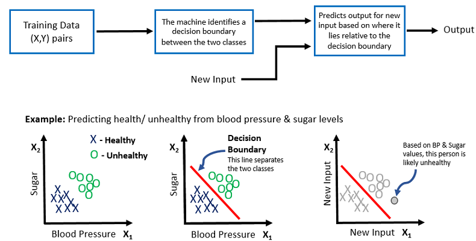

HOME BLOG EBOOKS ABOUT CONTACT SHOP
As we briefly touched upon in the previous section, Supervised learning is a type of Machine Learning which requires human supervision. The supervised learning process starts with gathering well labelled training data. Labelled data means data in the form of input-output pairs. The Input could be emails, messages, pictures, audio, sensor measurements, basically anything digital.
The basic idea behind supervised learning is really simple:
Supervised learning can be used to solve two types of problems: Regression & Classification.

For both these types, the process is essentially the same, but the main difference between them is that the output variable in regression is continuous while that for classification is discrete. That is, in regression the output is a real or numerical value, for example, weight, price, distance etc. Whereas in classification, the output is a category, for example, spam/not spam, large/small, true/false etc.
Regression methods are used in problems where we want to predict a real numerical value using the training data.
For example:
For such problems regression is the perfect choice, because the output we are looking for are numerical values.
There are many types of algorithms that can be used to deal with regression problems, such as Linear regression, SVR, GPR, Decision tree, Neural networks etc. We will learn a couple of these in detail in further sections.

Classification methods are used in problems where we want to label or categorize inputs.
For example:
In such problems, the output we are looking for are categories or labels, not numerical values. In classification too there are many types of algorithms that can be used, such as Logistic regression, SVM, Naive Bayes, Neural networks, Nearest Neighbor etc.

The first algorithm we’ll look into is the Linear Regression, but before that the next couple of sections is dedicated towards some basic math concepts. If you are decent at high school level math, you are free to skip them, but we do recommend you to check them out, just to brush up those concepts.